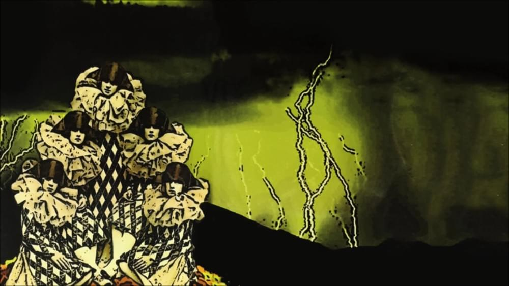
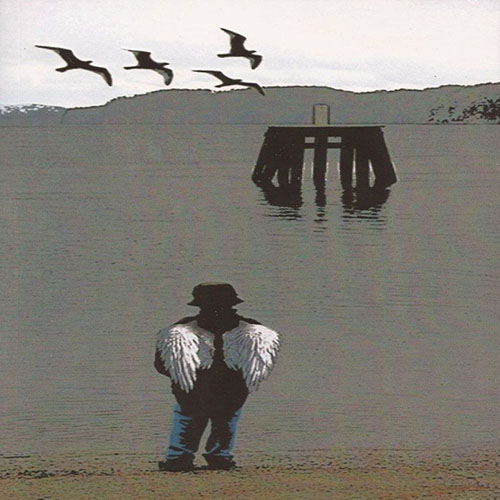
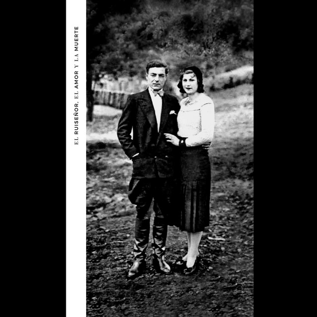

- Nike es la cultura.
- Amnesia.
- El tesoro de los inocentes.
- La piba del blockbuster
- Tomasito podes verme?...
- Mi caramel machiato.
- La muerte y yo.
- Adieu! bye bye! aufwiedersehen!
- Pabellon septimo.
- El charro chino.
- Cancion para mi goldfish.
- Tsunami.
- To beef or no to beef.
- Ciudad baigon.
- Pedia siempre temas en la radio.
- Ramas desnudas.
- Sopa de lagrimas.
- Te estas quedando sin balas de plata.
- Tatuaje.
- Porco rex.
- Veneno paciente.
- Porque sera que Dios no me quiere.
- Y mientras tanto el sol se muere.
- Martinis y tafiroles.
- Flight 956.
- Vuelo a Sidney.
- Bebamos de las copas lindas.

- Todos a los botes!
- No es dios todo lo que reluce.
- Ceremonia durante la tormenta.
- Torito es muerto.
- Satelital.
- Chante noire.
- Vino Mariani.
- ZZZZZZZZ...
- El tabano en la oreja.
- Submarino soluble.
- Black russian.
- Una rata muerta entre los geranios.

- A los pajaros que cantan sobre las selvas de internet.
- Beemedobleve.
- A la luz de la luna.
- Las superticiones traen mala suerte.
- Amok!Amok!
- Chau mohicano.
- Arca monster.
- Cada pequeña muerte.
- Babas del diablo.
- Habia una vez...
- Un par de fantasmas.
- La pajarita pechiblanca.

- Pinturas de guerra.
- La oscuridad.
- El callejon de los milagros.
- El ruiseñor, el amor y la muerte.
- Strangerdanger.
- El martillo de las brujas.
- El tio Alberto...
- Cancion para un terrorista bonito.
- La pequeña mamba.
- La moda no es vanguardia.
- A bailar que no hay infierno.
- La ciudad de los encandilados.
- Ostende hotel.
- Panasonic y el mundo a sus pies.
- El que la seca, la llena